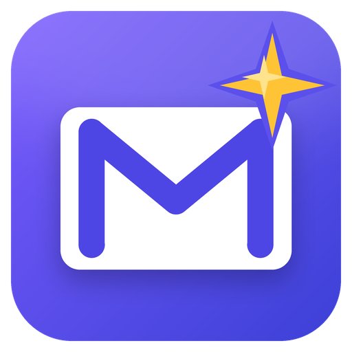

MagMail
A modern, security-focused Gmail client for Windows, with Claude built in to help sort, find, summarize and draft your mail.
💬
Conversations, not lists
Threads read top to bottom with a timeline of who wrote when. Replies open right under the message you're answering.
🏷️
Labels as folders
Your Gmail labels as a folder tree, with drag-and-drop sorting. Labels can also be mirrored to local folders on your PC.
✨
Claude assistant
Ask Claude to find what needs a reply, sort your inbox, summarize threads or write reports. It always asks before changing anything and can never send mail.
🔒
Private by design
Sign in with Google OAuth, never a password. Tokens and cached mail are encrypted on your PC, and there is no MagMail server.